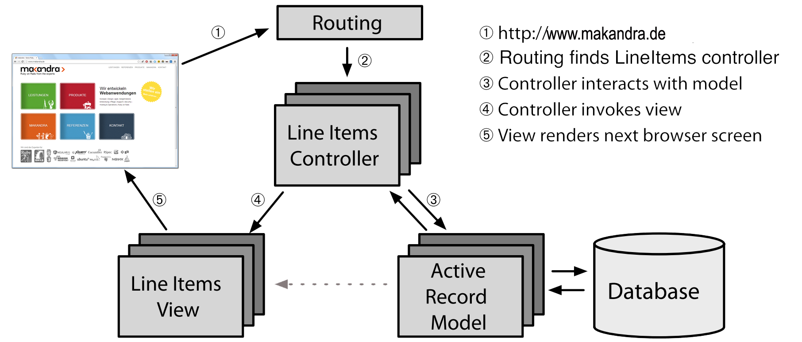

2. Ruby on Rails
- Ruby: höhere Programmiersprache, interpretiert, oo, prozedural, funktional, duck-typing
- Rails: quelloffenes Web Application Framework
- Ähnlichkeit zu Django
- Cucumber: Behavior Driven Development Tool
- RSpec: Behavior Driven Development Framework
Grundprinzipien
- MVC
- DRY: don't repeat yourself
- Convention over configuration
MVC

Rails and MVC

Convention over configuration
Beispiele:
- Namenskonventionen
- Verbindung zwischen Klasse und DB
- Pfade bestimmter Files
Database Migrations
- Ruby Code
- Timestamp
- Rollback
- Datenbankunabhängig